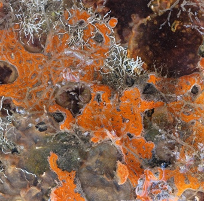

Factorial ANOVA
Analysis of variance (ANOVA) is one of the most frequently used techniques in the biological and environmental sciences. ANOVA is used to contrast a continuous dependent variable y across levels of one or more categorical independent variables x. The independent variables are termed the factor or treatment, and the various categories within that treatment are termed the levels. Here, we will consider designs with two or more factors that are both applied to the experimental units (read the single factor ANOVA page first if you are unfamiliar with ANOVA).
Frequently, we want to test for differences in a response variable due to two or more factors. These experimental or sampling designs allow us to test for the effects of each of these factors separately (termed main effects), and to test whether the two factors interact. For these designs, we use more complex versions of ANOVA than the most simple design that tests the effects of only one factor.

Consider an example where a researcher is testing the effects of metal contamination on the number of species found in sessile marine invertebrates (sponges, bryozoans and sea squirts etc.). They would like to know whether copper reduces species richness, but also know that the richness of invertebrates can depend on whether the substrate is vertical or horizontal. Consequently, they ran an experiment where species richness was recorded in replicate samples in each of the six combinations of copper enrichment (“None”,“Low”,“High”) and orientation (“Vertical”,“Horizontal”). The experimental design in termed factorial because all levels of one treatment are represented in all levels of the other treatment (also termed orthogonal).
The factorial ANOVA will test:
* whether there are any differences in richness among the three levels of copper enrichment
* whether there are any differences in richness among the two levels of substrate orientation
* whether there is any interaction between copper and orientation
You have three null hypotheses:
* there is no difference between the means for each level of copper, Ho: \(\mu_{None} = \mu_{Low} = \mu_{High}\)
* there is no difference between the means for each level of orientation, $Ho: \(\mu_{Vertical} = \mu_{Horizontal}\)
* there is no interaction between the factors
This is far better than running two separate single factor ANOVAs that contrast copper effects for each level of orientation because you have more statistical power (higher degrees of freedom) for the tests of interest, and you get a formal test of the interaction between factors which is often scientifically interesting.
Note that an ANOVA is a linear model, just like linear regression except that the predictor variables are categorical rather than continuous. With two predictor variables, the linear model is:
\[y_{ijk} = \mu + \alpha_i + \beta_j + (\alpha\beta)_{ij} + \varepsilon_{ijk}\]
where \(\mu\) is the overall mean, \(\alpha_i\) is the effect of the ith group of the first factor, and \(\beta_i\) is the effect of the jth group of the second factor and \((\alpha\beta)\) is the interaction.
Athough we have two factors, and an interaction effect, this requires fitting more than 3 parameters in our model because we have 3 levels of Factor A (Copper) and 2 levels of Factor B (Orientation) (if you can figure out how many parameters must be fit in this model, you are officially a stats geek! This is tricky even for those ‘in the know’).
With two factors, ANOVA partitions the total variance into a component that can be explained by the first predictor variable (among levels of the treatment A), a component that can be explained by the second predictor variable (among levels of the treatment B), a component that can be explained by the interaction, and a component that cannot be explained (within levels, the residual variance). The test statistic, F, is calculated three times to test each of the null hypotheses. For two fixed factors, the F ratios are:
\[F = \frac{MS_{A}}{MS_{within}}\] \[F = \frac{MS_{B}}{MS_{within}}\] \[F = \frac{MS_{AB}}{MS_{within}}\]
where MS are the mean squares, a measure of variation. The probability of obtaining the observed value of F is calculated from the known probability distribution of F, with two degrees of freedom (one for the numerator = the number of levels -1) and one for the denominator. Note that these F ratios will change if any factors are random (see below for the distinction between fixed and random factors),
Running the analysis
Your data should be formatted with the measurements from each replicate as a row and each of the variables as columns, corresponding to the dependent variable y, Factor A and Factor B.
Download the sample data set for the sessile invertebrates, Sessile.csv, and import into R to to see the desired format. Check that your predictor variables are factors with the function str
Sessile = read.csv(file = "Sessile.csv", header = TRUE)
str(Sessile)With our predictor variable correctly assigned as factors, we can now run the analysis. As with other forms of linear models we have a model formula with the dependent variable, y, to the left of the ~ and the predictor variables to the right. For this two factor design, we use:
Sessile.aov = aov(Richness ~ Copper * Orientation, data = Sessile)Note that when you specify a model with * between the two predictors, R automatically includes both variables and their interaction. This same model could also be written as:
Sessile.aov = aov(Richness ~ Copper + Orientation + Copper:Orientation, data = Sessile)The output from this analysis can be seen by using the summary function on the object created.
summary(Sessile.aov)Exactly the same model can also be run using the linear model function, lm.
Sessile.lm = lm(Richness ~ Copper * Orientation, data = Sessile)
anova(Sessile.lm)Interpreting the results
## Df Sum Sq Mean Sq F value Pr(>F)
## Copper 2 3330 1665.0 192.53 < 2e-16 ***
## Orientation 1 240 240.0 27.75 2.46e-06 ***
## Copper:Orientation 2 571 285.4 33.00 4.34e-10 ***
## Residuals 54 467 8.6
## ---
## Signif. codes: 0 '***' 0.001 '**' 0.01 '*' 0.05 '.' 0.1 ' ' 1The summary output of an ANOVA object is a table with the degrees of freedom (Df), sums of squares (Sum Sq), mean squares (Mean Sq) for the each of predictor variable (i.e., variation among levels of your treatments), their interaction and for the Residuals (i.e., varation within the levels). The test statistic, F value and its associated p-value (Pr(>F)) are also presented.
Check that you have the correct degrees of freedom. For a two factor design with fixed factors they are:
* Factor A: a - 1 (where a = number of levels of Factor A)
* Factor B: b - 1 (where b = number of levels of Factor B)
* Interaction (AB): (a-1)(b-1)
* Residual: ab(n -1) (where n = sample size)
The sums of squares and mean squares are measures of variation. There are three F statistics, corresponding to a test of each of the main effects and one for the interaction. The p-values are the probabilities of the observed F values from the F distribution (with the given degrees of freedom).
In this example, there is strong evidence to reject all three null hypotheses:
* that all levels of the copper treatment are equal (P < 0.001),
* that the vertical and horizontal orientations are equal (P < 0.001)
* that there is no interaction between copper and orientation (P < 0.001)
A significant interaction means that the effect of one factor depends upon the other. In this example, it would mean that the effect of copper was not consistent between the vertical and horizontal habitats. Consequently, the interpretation of the main effects becomes more complex. See Understanding interactions for more help on interpreting interactions in linear models. A quick way to help you understand an interaction if you get one is to examine an interactions plot.
interaction.plot(Sessile$Copper, Sessile$Orientation, Sessile$Richness)
Here you can see that the effect of copper (a decline in species richness) is more pronounced in the habitats with a vertical orientation, and that the difference between the two habitats changes with exposure to copper.
Multiple comparisons. If you detect any significant differences in the ANOVA, we are then interested in knowing exactly which levels differ from one another, and which do not. Remember that a significant p value in the test you just ran would reject the null hypothesis the means were the same across all groups, but not identify which were different from each other. If there is no interaction, you can run a post-hoc test on each of the main effects (only needed if there are more than two levels for an effect). If there is an interaction, you will need to consider post-hoc tests that contrast the means from all combinations of both factors.
Assumptions to check
The assumptions of factorial ANOVA’s are the same as for all linear models including the simpler one-way ANOVA’s (see ANOVA: single factor), being independence, normality and homogeneity of variances. We also need to consider two new issues: 1) whether your factors are fixed or random, and 2) whether your sampling or experimental design is balanced (i.e., has the same number of replicates in each combination of treatments).
Fixed and random factors. There is an important distinction between factors whose levels are the only ones of interest (termed fixed), and factors whose levels are a sampled from a larger collection of possible levels (termed random). For example, if we repeated the experiment above at three different sites in Sydney Harbour, chosen from many possible sites, we would consider site a random factor. We are not interested in those sites in particular, but would like to know if our experimental treatments were consistent across sites. On the other hand, if you were only interested in Darling Harbour and Circular Quay, then these two could be considered two levels of a fixed factor. Treating sites as a fixed factor in that case means that you conclusions should not be extrapolated to other possible sites, but restricted to those particular sites.
Statistically, there is a big difference between a fixed factors were you have measured all possible levels of interest (e.g, control vs a single treatment) and random factors where the levels are sampled from all possible levels. In analysis of variance, all this matters because the F tests that are being used to test your hypotheses are constructed differently depending on which factors are fixed and random. In the example above, all factors were fixed and the denominator of all F tests was \(MS_{within}\). In models with all factors random, and models with a mix of fixed and random factors (termed mixed effects models), other components of the variation are used as the denominators in the F tests.
If you have random factors, you will need to read more than this help page to establish the correct F ratios for your design, and you may need to calculate them manually. Note that the code presented will give correct F tests only for designs with all factors fixed. You should also strongly consider analysing your data as a mixed model
Balanced and unbalanced designs. Ideally, factorial ANOVA should be conducted with a balanced design - one with the same number of replicates in each combination of factors. Balanced designs are less likely to be affected by minor deviations from the assumptions of normality and homogeneity of variance. Unfortunately, unbalanced designs where you have unequal numbers of replicates for each level are common in practice (e.g. bad weather prevented sampling the second site as intensively, volunteer lost the data sheet etc!).
Unbalanced designs are more susceptible to violating the assumptions of ANOVA and there is no single way to partitioning the \(SS_{total}\) into the main effect and interaction components. The aov and lm functions in R use what are called Type I sums of squares where the terms in the model are fitted sequentially (i.e., how much variation is explained by factor A, then how much additional variation is explained by adding factor B). This means that the order of the terms in model matters: the model formulae Y ~ A + B + A:B and Y ~ B + A + B:A will give you different results.
There is a fair bit of debate on this in the statistical literature, but many advise using what are called Type II or Type III sums of squares for unbalanced designs. Other software packages like SPSS, SYSTAT and Minitab will automatically use Type III sums of squares where the order of terms in the model doesn’t matter. To access these in R, we can use the Anova function in the car package.
Normality. The assumption of normality can be checked by a frequency histogram of the residuals or by using a quantile plot where the residuals are plotted against the values expected from a normal distribution. The histogram of residuals should follow a normal distribution. If the points in the quantile plot lie mostly on the line, the residuals are normally distributed. Both of these plots can be obtained from the model object created by the aov function.
par(mfrow = c(1,2)) # This code put two plots in the same window
hist(Sessile.aov$residuals)
plot(Sessile.aov,which=2)
Violations of normality can be fixed via transformations or by using a different error-distribution in a generalised linear model (GLM).
Homogeneity of variance. The assumption of homgeneity of variance, namely that the variation in the residuals is approximately equal across the range of the predictor variable, can be checked by plotting the residuals against the fitted values from the aov model object.
plot(Sessile.aov,which=1)
Heterogeneous variances are indicated by non-random pattern in the residuals vs. fitted plot. Look for an even spread of the residuals on the y axis for each of the levels on the x axis. A fan-shaped distribution with more variance at higher values on the x axis is a common problem when data are skewed. See the testing assumptions of linear models module for more information. If there are strong patterns, one potential solution is to transform the response variable y. If this doesn’t fix the problem the best solution is to use a different error distribution in a generalised linear model (GLM).
Independence. ANOVA assumes that all replicate measures are independent of each other (i.e., equally likely to be sampled from the population of possible values for each level). This issue needs to be considered at the design stage. If data are grouped in any way (e.g., half the invertebrate samples measured at one time, then the other half measured later), then more complex designs are needed to account for additional factors (e.g., a design with an additional factor of sampling time).
There are a variety of measures for dealing with non-independence. These include ensuring all important predictors are in the model; averaging across nested observations; or using a mixed model
Communicating the results
Written. The results of the main effects and any interaction should be described in the text of a results section. Each F test can be described in the text, e.g., “The copper treatment and substrate orientation interacted to affect the species of sessile invertebrates (F = 19.33, df = 2,54, p < 0.001)”. Alternatively, all tests could be put into a Table like the one given in the output following summary(Sessile.aov) above. Description of the main tests would be followed by a description of the post-hoc results if used.
Remember that the interpretation of the main effects is complicated when there is a significant interaction (see above). In this example, while copper reduced species richness, that effect was not consistent between the two habitats. In other scenarios with an interaction, you might have copper affecting richness in one habitat but not another, preventing you making a simple statement like “copper reduced species richness” because it wouldn’t always be true.
Visual. A boxplot or column graph with error bars are suitable for contrasting a continuous variable across levels of categorical variable. See the graphing modules for making publication ready versions of these figures.
boxplot(Richness ~ Copper*Orientation,data = Sessile, names = c("High.H","Low.H","None.H","High.V","Low.V","None.V"),ylab="Species richness",xlab="Copper/Orientation",ylim=c(0,80))
Further help
Type ?aov or ?lm to get the R help for these functions.
Quinn and Keough (2002) Experimental design and data analysis for biologist. Cambridge University Press. Ch. 9 Multifactor analysis of variance.
McKillup (2012) Statistics explained. An introductory guide for life scientists Cambridge University Press. Ch. 13 two-factor analysis of variance.
Underwood (1997) Experiments in ecology: Their logical design and interpretation using analysis of variance.> Cambridge University Press.
Authors: James Lavender & Alistair Poore
Last updated:
## [1] "Tue Jan 25 09:47:36 2022"